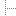
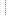
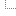

|
Section 5.3 Exception handling |
 |
|
| |
|
Section 5.3 Exception handling |
|
|
| |
 Exception handling explained in this section is a new feature introduced
by ANSI-C++ standard.
If you use a C++ compiler that is not adapted to this standard it is possible
that you cannot use this feature.
Exception handling explained in this section is a new feature introduced
by ANSI-C++ standard.
If you use a C++ compiler that is not adapted to this standard it is possible
that you cannot use this feature. |
During the development of a program, it may be some cases where we do not have the certainty that a piece of the code is going to work right, either because it accesses to resources that do not exist or because it gets out of an expected range, etc...
This type of anomalous situations are included in what we consider exceptions and C++ has recently incorporated three new operators to help us to handle these situations: try, throw and catch.
Its form of use is the following:
try {
// code to be tried
throw exception;
}
catch (type exception)
{
// code to be executed in case of exception
}
For example:
// exceptions
#include <iostream.h>
int main () {
char myarray[10];
try
{
for (int n=0; n<=10; n++)
{
if (n>9) throw "Out of range";
myarray[n]='z';
}
}
catch (char * str)
{
cout << "Exception: " << str << endl;
}
return 0;
}
| Exception: Out of range |
In this example, if within the n loop, n gets to be more than 9 an exception is thrown, since myarray[n] would in that case point to a non-trustworthy memory address. When throw is executed, the try block finalizes right away and every object created within the try block is destroyed. After that, the control is passed to the corresponding catch block (that is only executed in these cases). Finally the program continues right after the catch block, in this case: return 0;.
The syntax used by throw is similar to the one of return: Only one parameter that is not needed to be enclosed between parenthesis.
The catch block must go right after the try block without including any code line between them. The parameter that catch accepts can be of any valid type. Even more, catch can be overloaded so that it can accept different types as parameters. In that case the catch block executed is the one that matches with the type of the exception sent (the parameter of throw):
// exceptions: multiple catch blocks
#include <iostream.h>
int main () {
try
{
char * mystring;
mystring = new char [10];
if (mystring == NULL) throw "Allocation failure";
for (int n=0; n<=100; n++)
{
if (n>9) throw n;
mystring[n]='z';
}
}
catch (int i)
{
cout << "Exception: ";
cout << "index " << i << " is out of range" << endl;
}
catch (char * str)
{
cout << "Exception: " << str << endl;
}
return 0;
}
| Exception: index 10 is out of range |
In this case there is a possibility that happen, at least, two different exceptions:
We can also define a catch block that captures all the exceptions independently of the type used in the call to throw. For that we have to write three points instead of the parameter type and name accepted by catch:
try {
// code here
}
catch (...) {
cout << "Exception occurred";
}
It is also possible to nest try-catch blocks within more external try blocks. In these cases, we have the possibility that an internal catch block forwards the exception received to the external level, for that it is used the expression throw; with no arguments. For example:
try {
try {
// code here
}
catch (int n) {
throw;
}
}
catch (...) {
cout << "Exception occurred";
}
This function is generally defined so that it terminates the current process immediately showing an "Abnormal termination" error message. Its format is:
void terminate();
Because this is a class hierarchy, if you include a catch block to capture any of the exceptions of this hierarchy using the argument by reference (i.e. adding an ampersand & after the type) you will also capture all the derived ones (rules of inheritance in C++).
exception bad_alloc (thrown by new) bad_cast (thrown by dynamic_cast when fails with a referenced type) bad_exception (thrown when an exception doesn't match any catch) bad_typeid (thrown by typeid) logic_error domain_error invalid_argument length_error out_of_range runtime_error overflow_error range_error underflow_error ios_base::failure (thrown by ios::clear)
The following example catches an exception of type bad_typeid (derived from exception) that is generated when requesting information about the type pointed by a null pointer:
// standard exceptions
#include <iostream.h>
#include <exception>
#include <typeinfo>
class A {virtual f() {}; };
int main () {
try {
A * a = NULL;
typeid (*a);
}
catch (std::exception& e)
{
cout << "Exception: " << e.what();
}
return 0;
}
| Exception: Attempted typeid of NULL pointer |
You can use the classes of standard hierarchy of exceptions to throw your exceptions or derive new classes from them.
| © The C++ Resources Network, 2000-2001 - All rights reserved |
 Previous:
Previous:5-2. Namespaces. |
 index |
 Next:
Next:5-4. Advanced classes type-cast. |